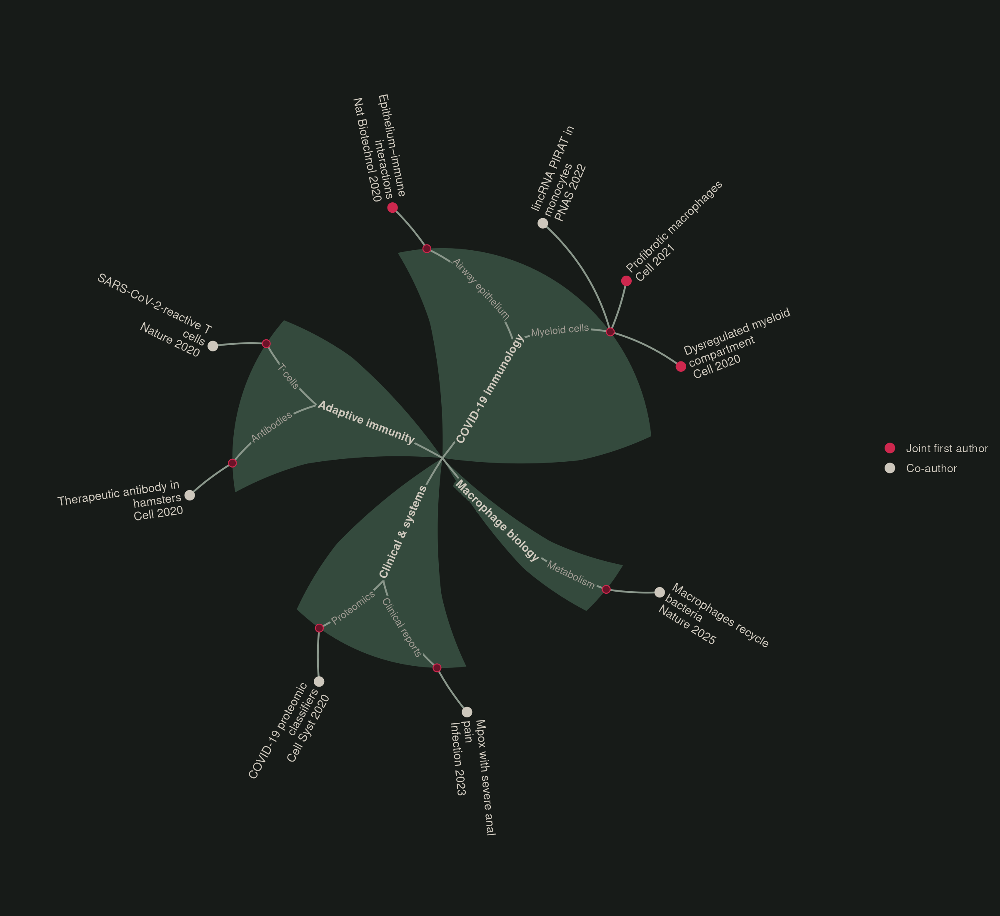

About
I’m a physician–scientist working on human immunology and genetic variation.
My background is in experimental immunology and internal medicine. I now spend much of my time working with sequencing data and statistical models.
I’m interested in why immune responses differ between people, and how they change over a lifetime.
Currently
Postdoctoral research in John Tsang’s lab at Yale’s Center for Systems and Engineering Immunology, studying changes in allelic expression over time.
More about my researchResearch
Genetic variation and the immune system.
Allelic expression over time
When do the two copies of a gene contribute unequally to its expression? My current work examines how these differences persist or change across repeated measurements.
Somatic mutations and immune aging
I’m interested in how mutations acquired throughout life affect immune function and the distinction between self and foreign.
Macrophages and tissue repair
My previous work investigated macrophage responses in severe viral infection and their connection to lung fibrosis.
Publications
Open full-size graph ↗
Publication references (9)
Lesbats J, Brillac A, Reisz JA, …, Wendisch D, …, Garaude J. Macrophages recycle phagocytosed bacteria to fuel immunometabolic responses. Nature. 2025;640:524–533.
Read article ↗Pfäfflin F, Wendisch D, Scherer R, …, Schürmann D. Monkeypox in-patients with severe anal pain. Infection. 2023;51:483–487.
Read article ↗Aznaourova M, Schmerer N, Janga H, …, Wendisch D, …, Schulte LN. Single-cell RNA sequencing uncovers the nuclear decoy lincRNA PIRAT as a regulator of systemic monocyte immunity during COVID-19. Proceedings of the National Academy of Sciences. 2022;119(36):e2120680119.
Read article ↗Wendisch D*, Dietrich O, Mari T, von Stillfried S, …, Sander LE. SARS-CoV-2 infection triggers profibrotic macrophage responses and lung fibrosis. Cell. 2021;184(26):6243–6261.e27.
Read article ↗Kreye J, Reincke SM, Kornau HC, …, Wendisch D, …, Prüss H. A therapeutic non-self-reactive SARS-CoV-2 antibody protects from lung pathology in a COVID-19 hamster model. Cell. 2020;183(4):1058–1069.e19.
Read article ↗Braun J, Loyal L, Frentsch M, Wendisch D, …, Thiel A. SARS-CoV-2-reactive T cells in healthy donors and patients with COVID-19. Nature. 2020;587(7833):270–274.
Read article ↗Schulte-Schrepping J, Reusch N, Paclik D, …, Wendisch D*, …, Sander LE; Deutsche COVID-19 OMICS Initiative (DeCOI). Severe COVID-19 is marked by a dysregulated myeloid cell compartment. Cell. 2020;182(6):1419–1440.e23.
Read article ↗Chua RL, Lukassen S, Trump S, Hennig BP, Wendisch D*, …, Eils R. COVID-19 severity correlates with airway epithelium–immune cell interactions identified by single-cell analysis. Nature Biotechnology. 2020;38(8):970–979.
Read article ↗Messner CB, Demichev V, Wendisch D, …, Ralser M. Ultra-high-throughput clinical proteomics reveals classifiers of COVID-19 infection. Cell Systems. 2020;11(1):11–24.e4.
Read article ↗
Background
From clinical medicine to computational immunology.
- Yale University
- Postdoctoral research in human immunology.
- Berlin Institute of Health
- Research on human organoid models.
- Charité, Berlin
- Medicine, internal medicine, and doctoral research in computational human immunology.
I work across experimental and computational approaches, including single-cell and bulk transcriptomics, immune profiling, and statistical modelling.